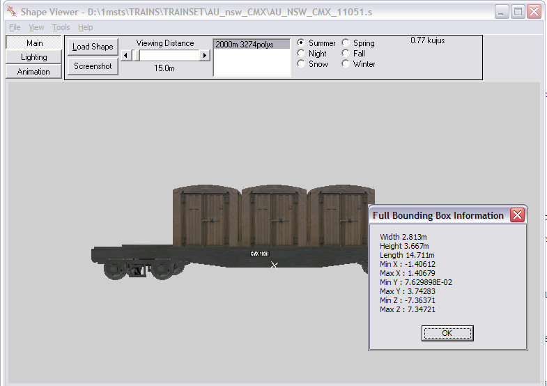
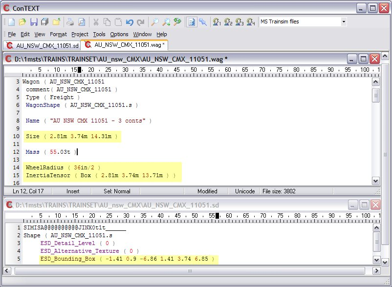
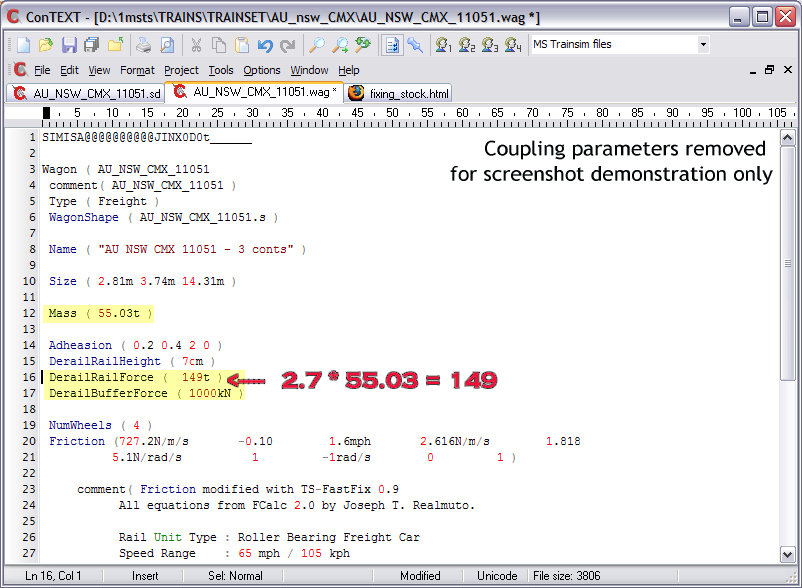
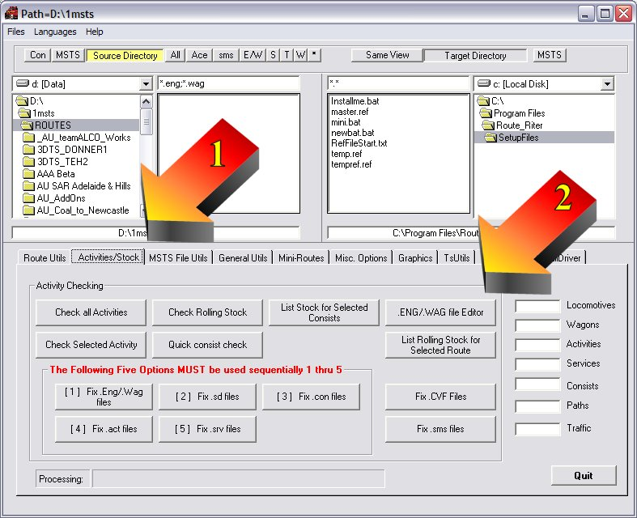
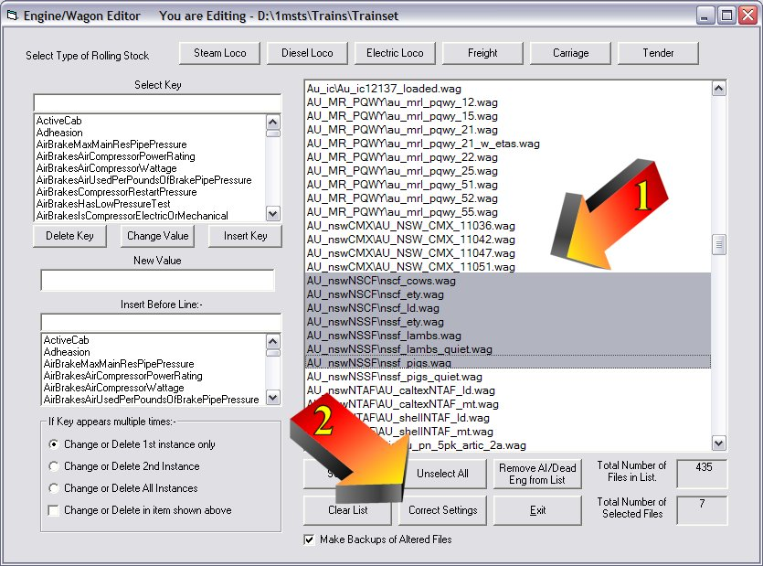
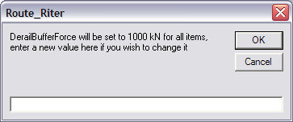
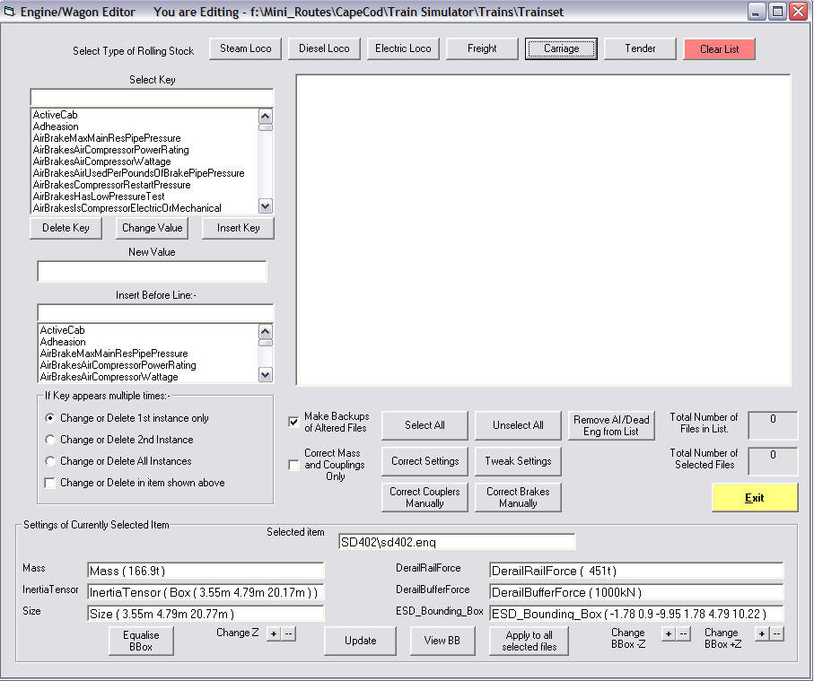
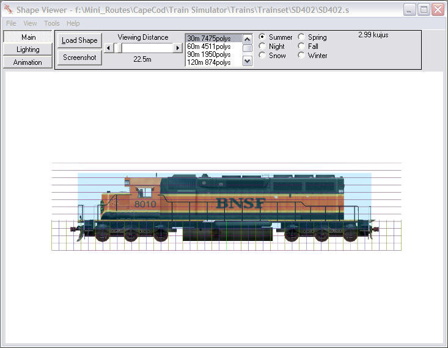
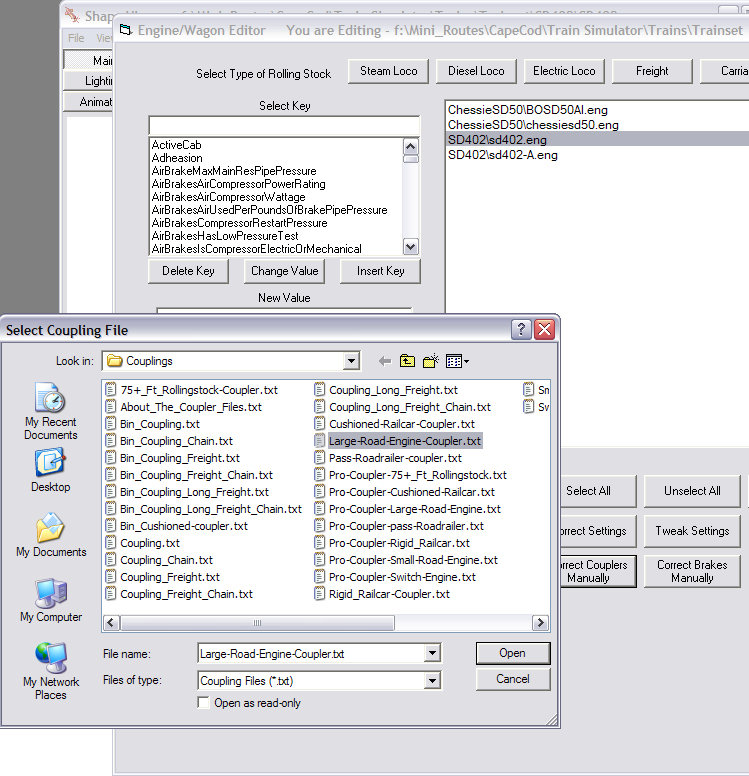
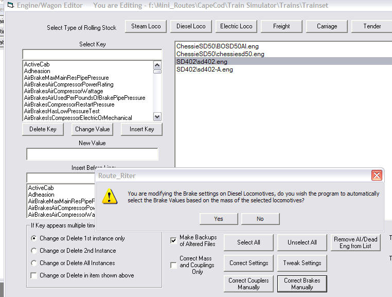

Route-Riter - Route Riter: Getting your Rollingstock Rolling
by Yuri Sos & Ian Bowles
updated by Mike Simpson 29 January 2007

|

|
One of the biggest frustrations in MSTS is getting the parameters associated with reliable operation for coupling and activities correct and consistent.
Ian Bowles (gallop3 on the forums) and I have worked closely with Mike "The Route Riter Wizard" Simpson to create a simple one-button fix for your rolling stock. This one-button fix requires only that the Mass in the ENG or WAG file be correct.
So what does this one-button fix actually do?
Here's an example of what is achieved:
This first image below shows a model in Shape Viewer with Ctrl-C pressed to display its dimensions:

After Route_Riter ENG/WAG file editor has adjusted the WAG and SD files, this is the result (below):

The image below shows that the DerailBufferForce has been set to 1000kN (user definable) and the DerailRailForce has been set to a correct 149t (2.7*55.03 to nearest integer):

In one click, you have achieved accurate consistency across all your models, eliminating all Bounding Box, Size, InertiaTensor and Derail Force errors.
Click on the tab labelled Activities/Stock" (arrowed "1" below).
Click on the .ENG/.WAG File Editor button (arrowed "2" below).

Click on Correct Settings to commence the process (arrowed "2" below).

You'll be offered 1000kN as the default DerailBufferForce - you may change this to any other value if you wish, then click "ok" and the corrections will commence:

I have done a lot of extra work on the Correct Settings button. It now :-
The 'Tweak Settings' button has now been added - This allows you to actually view the bounding boxes of a selected rolling-stock item and to make small changes.

This button displays the details shown above of the selected rolling stock item, and allows you to make small changes to the 'Z' parameter of both the bounding box and size settings of the item. There is also a button which will equalise the bounding box (making it symmetrical about the center of the item).
Once you have made these changes, click Update to save them, you can view the Bounding Box by clicking the View BB button. Once everything is satisfactory, you can then select other rolling-stock of the same class from the list (e.g. all SD402 locos) and click the 'Apply to all selected files' button and all will be updated.

This picture shows the View BB screen which is overlaid with Ian MacMillan's Measurement Tool which shows the loco behind a 0.5m grid which allows you to easily tweak the Bounding Box to the position you require it.

As Route_Riter now contains a large selection of Coupling and Brake files which have been fine-tuned by Bill Prieger, Joe Morris, Otto Wipfel and Jean-Louis Chauvin as well as the original ones I supplied from Yuri and Ian Bowles. More experienced users required a means whereby they could select, say, a number of wagons, and add a certain Coupler file to each.
This is accomplished by using the Correct Couplers Manually button. You use this as before, but clicking on say the Diesel Loco button to get a list of your Diesel Locos. Then select those you wish to modify (Ctrl-Click). Then click the 'Correct Couplers Manually' button. This brings up the Couplings folder and you can select the required coupler from the list provided (or you could add your own coupler.txt files if you have made/modified your own files.

Similar to the above, there is also a "Correct Brakes Manually" button on this screen. This button allows you to add 'TurboBill's' brake settings, however it has some automatic features as well as the manual ones.
If for instance you select all of your Freight Wagons (not Inter-Modal or Rail-Roaders) then run this option, you will be asked if you wish to carry out a Manual or Automatic fix to the brakes on the selected stock. If you select Automatic, the option checks the Mass of the wagon and adds the correct settings for a wagon of that mass.
Unfortunately, when it comes to automatic changes, you are currently locked into Bill's nomenclature and parameters which are suitable only for modern American rolling stock. In addition, Bill's parameters assumes that every passenger carriage has the same braking ability/force with no allowance for varying weights or types or carriage.
To have Route Riter alter brake settings correctly for non-American stock (for example, Australian stock uses 70 psi brake pipe pressure and has NO emergency reservoir, plus there are wooden-bodied as well as steel-bodied passenger stock), you will need to alter the contents of each file in the \Brakefiles folder to suit local conditions, but you MUST keep the filenames the same (ie "20t railcar brake values.txt" or similar) or Route Riter will simply delete the brake section from your WAG file completely (nb "railcar" in the filename here refers to standard freight wagons, NOT passenger wagons).
If however, you select Manual, then you must select a brake patch to use with the selected wagons. If you run different types of (non-American) passenger stock, the "automatic" selection is useless - you will need to use the "Manual" selection and apply the appropriate Passenger value.
This option also works in a similar fashion for Diesel Locos (but again American locos only) - No Steam or Electric patches are available yet.